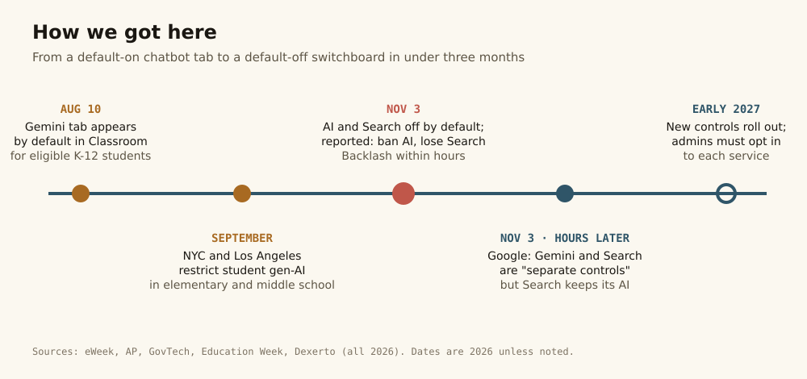
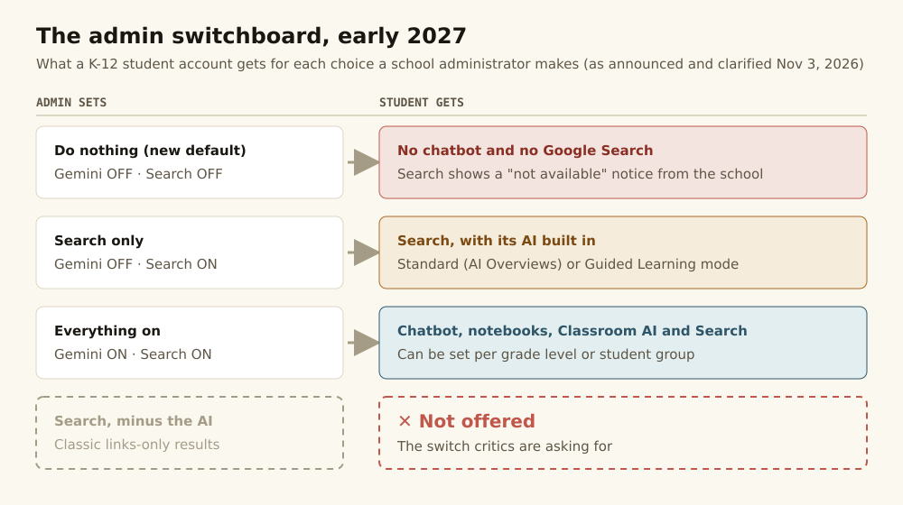

Savvy Security LLC · Research
Search Comes With Strings
Google says schools should be in control of AI. Starting in early 2027, a school can turn off Google’s chatbot for students, but it cannot keep Google Search without the AI built into it. What happened, what the research says about AI and learning, and what schools and parents can actually do.
Abstract
On November 3, 2026, Google said Gemini, Gemini Notebook, Gemini in Classroom and Google Search will all start off for K-12 student accounts, and an administrator must switch each one on. The first reports said schools that refused AI would lose Search entirely. Within hours Google clarified that Gemini and Search are separate switches. The catch stayed: there is no version of Google Search for students without its AI features.
The research does not support either extreme. A field experiment in PNAS found that an unguarded chatbot made students do 17% worse once it was taken away, while a tutor built to give hints instead of answers largely avoided the harm. A randomized trial in Scientific Reports found a well-designed AI tutor beat a strong in-person class.
The argument: the question that matters for kids is not “AI on or off.” It is who gets to choose the design, and right now that choice is bundled with the most important research tool on the internet.
1 · What happened
Google’s vice president and general manager of education, Chris Phillips, announced the change in a blog post on Tuesday, November 3. Four student-account services will start switched off: Gemini, Gemini Notebook, Gemini in Classroom, and Google Search itself. A school administrator has to turn each on before students can use it (AP via ABC13, 2026). The new controls arrive in early 2027 (eWeek, 2026).
This was a U-turn on the default. On August 10, an update put a Gemini tab in Google Classroom for eligible K-12 students. Schools had to authorize access, but once an account qualified the tab showed up on its own (eWeek, 2026). Before that, Gemini had been limited to students 18 and older, and the change set off an outcry from educators, child development experts and parents (AP via ABC13, 2026).

The scale is why this matters. Google says 150 million students and teachers worldwide use Google Classroom, and it is the dominant education technology provider for U.S. schools (AP via ABC13, 2026). The two biggest districts in the country, New York City and Los Angeles, had already temporarily banned generative AI tools in elementary and middle schools while they write policy (AP via ABC13, 2026).
2 · What didn’t happen
If you saw this on social media as “Google is cutting off universities that don’t let students use AI,” three parts of that are off.
- It is K-12, not colleges. The policy covers student accounts in kindergarten through 12th grade. Google’s higher-education push in 2026 went the other way, offering Gemini and NotebookLM to universities that ask for them (Google, 2026b).
- It is not about whether students may use AI. It is about which Google services work on school-managed accounts. A student’s home device and personal account are not part of it.
- “Ban AI, lose Search” was the first version, not the last. Google spokesman Davis Thompson told GovTech that Gemini and Search are separate controls, and that a school can decline Gemini and still turn Search on (GovTech, 2026). GovTech headlined it a reversal. Tech Insider warned against that word, since what changed was a clarification, not a policy withdrawal (Tech Insider, 2026).
So the honest headline is narrower and, I think, more interesting: you can say no to Google’s chatbot. You cannot say no to the AI inside Google Search and keep Google Search.
3 · The missing switch

Schools that turn Search on get two modes. Standard Search includes AI Overviews and conversational features, much like the consumer version. Guided Learning uses AI to walk students through questions step by step without handing over the full answer right away (eWeek, 2026). Administrators can switch services on one at a time, set them by grade level, and keep Search off for selected student groups. What they cannot do, according to Google executives who spoke to Education Week, is keep Search on while removing all of its AI features (eWeek, 2026).
Google’s explanation is that the two can’t be pulled apart. “Search and AI are deeply integrated,” Phillips told The New York Times (TechCrunch, 2026a). Speaking to Education Week, he said a school that just wants AI off has the choice not to have Search on at all (Education Week, 2026). A student whose school leaves Search off sees a notice from the school saying it isn’t available (Android Authority, 2026).
“Deeply integrated” is a product decision, not a law of physics. Search engines ranked links for twenty-five years before they generated summaries. DuckDuckGo told TechCrunch that Google could easily turn off Search’s AI features for schools if it chose to (The AI Insider, 2026). Whether that is technically trivial inside Google I can’t verify, but the plain-links product clearly existed recently.
Default-off is a real improvement. An opt-in model with per-grade controls is a better design than August’s default-on tab, and it gives districts a paper trail of who turned what on. Both things are true at once.
4 · The fight
The backlash was immediate, and most of it was about antitrust. The announcement had followed questions to Google from Senators Richard Blumenthal and Josh Hawley about AI’s effects on children (NeoTeo, 2026). Former FTC chair Lina Khan wrote on X that Google is using its search monopoly to coerce schools into adopting AI (IBTimes UK, 2026). New York City mayor Zohran Mamdani accused the company of using monopoly power to force AI into public schools (Futurism, 2026b), and Senator Bernie Sanders and Senator Richard Blumenthal piled on (Common Dreams, 2026; ITIF, 2026). Josh Golin of the children’s advocacy group Fairplay urged schools to turn the AI tools off as soon as the option appears, and to consider dropping Google Search for more privacy-protective alternatives (AP via ABC13, 2026).
The defense is worth reading too. Jack Nicastro of the Information Technology and Innovation Foundation argued the critics confuse a preference for a different product with an antitrust violation. He pointed to Judge Amit Mehta’s dismissal of Penske Media’s tying claim against Google, where the court found Google Search and AI Overviews plausibly have the same use case (ITIF, 2026). Google, for its part, replied on X that all three services are off by default and that schools are in control (SaveDelete, 2026).
The default moved to “off.” The bundle did not.
5 · What the research says
Strip out the politics and there is a real question underneath: is AI good or bad for kids’ learning? The peer-reviewed answer so far is “it depends on the design,” which is exactly why who controls the design matters.
![Infographic of five studies. Warning signs: Bastani et al. PNAS 2025, students who used an unguarded chatbot scored 17% worse once it was removed; Gerlich, Societies 2025, more AI use correlated with weaker critical thinking among 666 people; Kosmyna et al. 2025 preprint, weakest brain connectivity in the chatbot group. Reasons for hope: the same Bastani study found a hint-giving tutor largely erased the drop; Kestin et al. Scientific Reports 2025, an AI tutor beat in-class active learning; Lee et al. CHI 2025, trust in AI predicts less critical thinking and self-confidence predicts more.](assets/fig-evidence.svg)
The crutch effect
The cleanest evidence comes from Bastani and colleagues at Wharton and Penn, published in PNAS in 2025. They gave nearly a thousand high-school math students in Turkey one of two GPT-4 tutors: a plain ChatGPT-style interface, or one prompted to protect learning. When the plain tutor was later taken away, those students scored 17% worse than students who never had it. The safeguarded tutor largely avoided that drop. Without guardrails, students leaned on the chatbot as a crutch during practice (Bastani et al., 2025).
That finding matters for the Google fight specifically. Google’s own Guided Learning mode is, on paper, the “guarded tutor” design. Standard Search with AI Overviews is closer to the answer machine. A district that wants the first and not the second for younger students can set Search to Guided Learning, if the control works as described.
Offloading and critical thinking
Gerlich (2025), in Societies, surveyed and interviewed 666 people and found a significant negative correlation between frequent AI use and critical thinking, mediated by cognitive offloading. Younger participants leaned on AI more and scored lower (Gerlich, 2025). This is correlational, so it can’t show AI caused the gap. A Microsoft Research and Carnegie Mellon survey of 319 knowledge workers, presented at CHI 2025, found a related pattern: higher confidence in the AI went with less critical thinking, and higher self-confidence went with more (Lee et al., 2025).
There is an older thread here about Search itself. Sparrow, Liu and Wegner showed in Science in 2011 that people who expect to look something up later remember where to find it better than the information itself. The internet had become a form of external memory (Sparrow et al., 2011). Generative AI pushes that further: it doesn’t just store the answer, it does the synthesis.
The brain-scan study
An MIT Media Lab team led by Nataliya Kosmyna recorded EEG while participants wrote essays with ChatGPT, with a search engine, or with nothing. Brain connectivity was strongest in the no-tools group, moderate with search, and weakest with the chatbot. Over four months the chatbot group underperformed on neural, language and behavioral measures (Kosmyna et al., 2025). One caveat: this is an arXiv preprint with a small sample, not a peer-reviewed paper. One detail from it is useful, though: participants who wrote unaided first and only later switched to the chatbot did better than those who started with it.
The case for AI tutors
The strongest pro-AI result is a randomized controlled trial by Kestin and colleagues in Harvard’s physics department, published in Scientific Reports. Students learned significantly more in less time with an AI tutor than in an in-class active learning session, and felt more engaged and motivated (Kestin et al., 2025). The tutor was built on the same teaching practices as the class. It was a small study, under 200 undergraduates (Hechinger Report, n.d.), and these were college students, not middle schoolers.
Every good result used a tutor that withholds answers. Every bad one used a tool that hands them over. That is the through-line across Bastani’s two arms, Kestin’s design, and Kosmyna’s sequencing finding. The variable is not “AI”; it is whether the student still has to do the thinking.
Nobody has studied AI Overviews for kids. I could not find peer-reviewed work on how search-result AI summaries affect learning in K-12 students. That is the feature schools are being asked to accept with Search, and it is the one with the least evidence either way.
6 · The security read
This blog is about security, so here is the angle most coverage skipped.
- Concentration is a risk, even when nothing breaks. When one vendor runs the devices, the accounts, the classroom software and the search engine, a single policy change becomes a district-wide event. That is the same concentration problem I wrote about in No Adversary Required, applied to policy instead of outages.
- Consent paperwork is part of the attack surface. Search and Assistant are Google “Additional Services,” so schools must get parental consent for students under 18 and reconfirm compliance every year (eWeek, 2026). A new set of switches is a new chance for a district to misconfigure who can see what.
- Data terms differ by product. Google says Gemini for Education and Gemini Notebook are core services under the Workspace for Education terms, with data not reviewed by humans or used to train models (Google, 2026a). Administrators should confirm, product by product, which terms apply to what students actually use, including AI features inside Search.
- Watch for workaround sprawl. If Google Search is off, students will search somewhere. Unmanaged personal accounts and random chatbots on school Wi-Fi are worse for privacy and safety than a well-configured managed tool.
7 · What schools and parents can do
For district IT and administrators
- Decide before the default decides for you. When the controls land in early 2027, “do nothing” means no Google Search for students. Have a decision, and a written reason, for each grade band.
- Use the grade-level controls. A reasonable starting point the research supports: Guided Learning Search for younger grades, Standard Search later, chatbot access only where teachers are trained for it.
- Price out an alternative. Other search engines and filtering tools exist. Even if you never switch, knowing your exit cost is how you negotiate.
- Audit consent and terms. Confirm parental consent for Additional Services and which data terms cover each product students touch.
For parents
- Ask your district what it plans to switch on, and when. Most will not have decided yet.
- Teach the order of operations. Think first, then check with AI. That is the pattern that worked in the studies above.
- Watch for the crutch. If homework is suddenly perfect and quiz grades are not, that is the Bastani result playing out at your kitchen table.
The question isn’t whether kids use AI. It’s who gets to decide how.
From the book
More on how the tools we depend on shape what we can do, in A Hacker’s Guide to Survive by Malcolm R. Smith.
📖 Get A Hacker’s Guide to Survive on Amazon →
Or read Chapter 1 free first.
Sources
Peer-reviewed and scholarly
- Bastani, H., Bastani, O., Sungu, A., Ge, H., Kabakcı, Ö., & Mariman, R. (2025). Generative AI without guardrails can harm learning: Evidence from high school mathematics. Proceedings of the National Academy of Sciences, 122(26), e2422633122. doi:10.1073/pnas.2422633122.
- Kestin, G., Miller, K., Klales, A., Milbourne, T., & Ponti, G. (2025). AI tutoring outperforms in-class active learning: An RCT introducing a novel research-based design in an authentic educational setting. Scientific Reports, 15, 17458. doi:10.1038/s41598-025-97652-6.
- Gerlich, M. (2025). AI tools in society: Impacts on cognitive offloading and the future of critical thinking. Societies, 15(1), 6. doi:10.3390/soc15010006.
- Lee, H.-P., Sarkar, A., Tankelevitch, L., Drosos, I., Rintel, S., Banks, R., & Wilson, N. (2025). The impact of generative AI on critical thinking: Self-reported reductions in cognitive effort and confidence effects from a survey of knowledge workers. Proceedings of CHI 2025, ACM. doi:10.1145/3706598.3713778.
- Sparrow, B., Liu, J., & Wegner, D. M. (2011). Google effects on memory: Cognitive consequences of having information at our fingertips. Science, 333(6043), 776–778. doi:10.1126/science.1207745.
- Kosmyna, N., Hauptmann, E., Yuan, Y. T., Situ, J., Liao, X.-H., Beresnitzky, A. V., Braunstein, I., & Maes, P. (2025). Your brain on ChatGPT: Accumulation of cognitive debt when using an AI assistant for essay writing task. arXiv:2506.08872 (preprint, not peer-reviewed). arxiv.org.
Primary statements
- Google (2026a). Gemini for Education for higher education (data protection terms). edu.google.com.
- Google (2026b). How universities are preparing students for an AI-powered future. blog.google.
Reporting and analysis (checked November 25, 2026)
- AP via ABC13 (2026). Google will cut off search access for students at schools that reject AI tools. November 4. abc13.com.
- Education Week (2026). Google’s new rules hand schools hard choices about AI and Search. November 3. edweek.org.
- eWeek (2026). Google makes schools choose between AI restrictions and Search access. eweek.com.
- GovTech (2026). Google reverses decision to turn off Search for schools not using AI. November 4. govtech.com.
- TechCrunch (2026a). Google will let schools disable its AI tools, but not without sacrificing Search. November 3. techcrunch.com.
- TechCrunch (2026b). Google faces backlash for plan that would turn off Search for schools that restrict AI. November 4. techcrunch.com.
- Android Authority (2026). Google to turn off AI for students. androidauthority.com.
- Dexerto (2026). Google will block search for students if schools turn off its AI. dexerto.com.
- Tech Insider (2026). Google softens school Search rule after AI-ban backlash. tech-insider.org.
- IBTimes UK (2026). Google is allegedly using its “search monopoly to coerce schools” into keeping AI tech. ibtimes.co.uk.
- Futurism (2026b). Mamdani blasts Google for using monopoly to bully schools that ban AI. November 8. futurism.com.
- Common Dreams (2026). Google AI schools policy. commondreams.org.
- The AI Insider (2026). Coverage of Google’s school Search policy, including DuckDuckGo’s statement. November 5. theaiinsider.tech.
- NeoTeo (2026). Google’s K-12 AI plan would cut student Search access after a full AI opt-out. neoteo.com.
- SaveDelete (2026). Google’s school AI switch: why turning it off blocks Search. savedelete.com.
- Nicastro, J. (2026). No, Google is not forcing schools to adopt AI. Information Technology and Innovation Foundation (ITIF), November 18. itif.org.
- Hechinger Report (n.d.). Coverage of Kestin’s AI tutoring experiment at Harvard. hechingerreport.org.
Malcolm R. Smith writes on security architecture, threat modeling, and autonomous defense for Savvy Security LLC. He builds software as a prompt engineer on a used Chromebook, and is the author of A Hacker’s Guide to Survive.